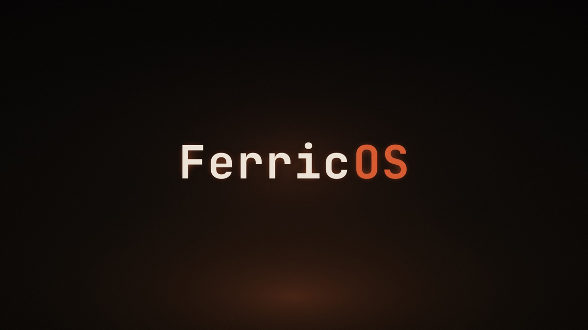
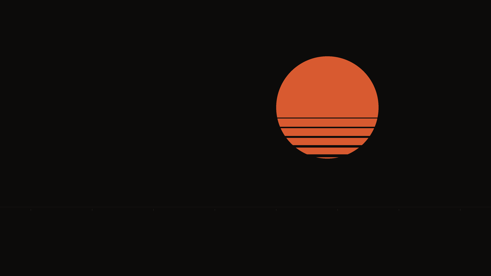
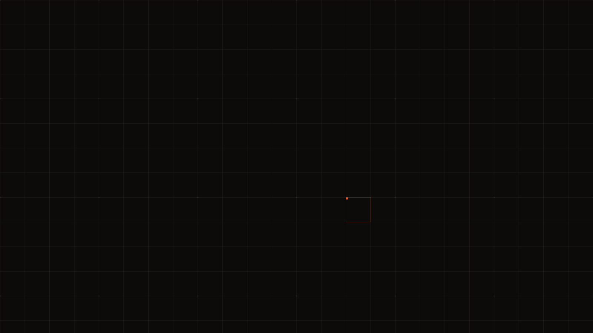
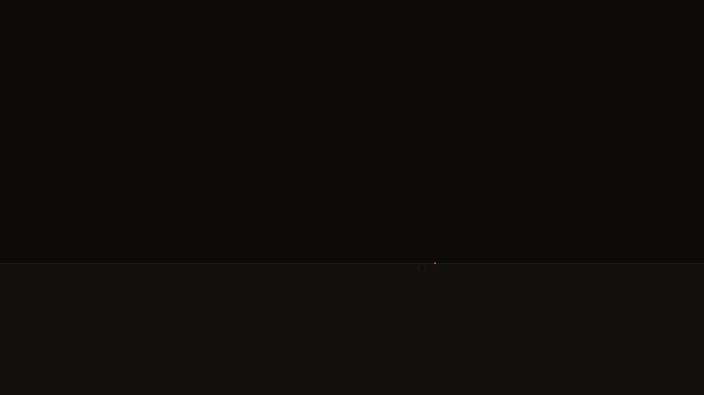

DESKTOP
Quiet Ferric desktop
Hyprland + waybar + kitty + fuzzel + mako, tuned to oxide
#D85A30 on near-black #0C0B0A.
1px seams. No blur. No glow.
// ferric oxide · Fe₂O₃ · rolling release
Magnetic tape, sodium light, and a quiet terminal. Hyprland tuned to one palette — oxide on near-black, 1px seams, no blur, no glow. Real Arch underneath.
Five ideas, executed all the way down the boot chain.
Hyprland + waybar + kitty + fuzzel + mako, tuned to oxide
#D85A30 on near-black #0C0B0A.
1px seams. No blur. No glow.
Syslinux menu, Plymouth tape-spool splash, tuigreet, and the desktop all share the same instrument-panel look. No jarring handoffs from power button to prompt.
ferric-install — preseeded archinstall in the terminal.
Or Install FerricOS — Calamares, graphical, with
ext4 / btrfs / LUKS options.
pacman, AUR-compatible, rolling release. The distro identity travels
in a handful of ferric-* packages from this repo's own
pacman repo — nothing forked, nothing frozen.
One repository is the entire distro: the archiso recipe, every
ferric-* package source, and the CI that builds it.
Rebuild the ISO and every package yourself, locally or in CI.
Every stage of the boot chain wears the same instrument-panel face.
BIOS or UEFI, Secure Boot off.
Oxide-on-black boot menu.
Tape-spool splash while the kernel spins up.
A terminal greeter, not a login "experience".
The quiet desktop. Same palette it booted with.
The live session logs straight into Hyprland. This is what it feels like.
ferric@ferricos ~ %
click a swatch to copy its hex
Straight from the ferric-skel Hyprland config. ❖ is SUPER.
Ships in ferric-artwork → /usr/share/backgrounds/ferric/.
Cycle them live with ❖ShiftW.




click a wallpaper to view it full-screen · full-resolution 4K originals ship with the OS
Five steps from download to desktop.
Grab the latest ISO from
Releases
and check it against SHA256SUMS.
sudo dd if=ferricos-*.iso of=/dev/sdX bs=4M status=progress oflag=sync
…or just drop the ISO onto a Ventoy stick.
Not yet supported. Flip it off in firmware settings.
BIOS or UEFI. The live session logs straight into Hyprland as the
ferric user.
Install FerricOS (app launcher → Calamares), or run
ferric-install in a terminal for preseeded archinstall.
On an up-to-date Arch system with archiso, base-devel, qemu-full, and edk2-ovmf:
./scripts/build-packages-local.sh && ./scripts/build-iso.sh
The recipe is evergreen — the ISO is a snapshot. Test in QEMU with ./scripts/test-bios.sh or ./scripts/test-uefi.sh.
Installed systems track Arch directly. FerricOS ships from its own [ferric] pacman repo.
pacman -Syupkgbuilds/**The architecture is opinionated so the desktop can be quiet.
airootfs ever reaches an installed system.ferric-skel, artwork in ferric-artwork, identity in ferric-base.filesystem's files.ferric-base.No. It's Arch, delivered. Installed systems update straight from Arch's official mirrors — kernel, desktop, everything. The FerricOS identity lives in a handful of extra packages.
No. ISOs are only a delivery vehicle for new installs. Existing systems
roll forward forever with pacman -Syu.
pacman -Syu pulls Arch's official repos plus the
[ferric] repo. FerricOS packages are republished by CI
whenever their sources change; ISOs are rebuilt monthly.
Yes — it's real Arch underneath. Any AUR helper works exactly as it would on vanilla Arch.
Not yet supported — disable it before booting the stick.
Yes — it's GPL-3.0-or-later. But forks must rename: "FerricOS", the wordmark, and the artwork identify this project. Derivative distros should ship their own name and branding.
FerricOS is designed & built by Cam Garrison — all the code is his. It's an independent personal project, not affiliated with or endorsed by Arch Linux. Built on Arch Linux and archiso; installer flow modeled on EndeavourOS.